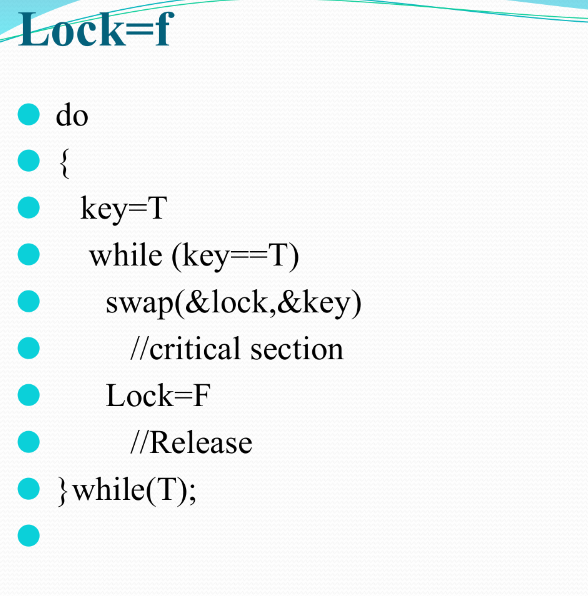

HARDWARE APPROACHES
- Process Synchronization problems occur when two processes running concurrently share the same data or same variable.
The value of that variable may not be updated correctly before its being used by a second process. Such a condition is known as Race Around Condition.
- The algorithms in the hardware approach of solving Process Synchronization problem are:
Test and Set
Swap
-
1. Test and Set :
Here, the shared variable is lock which is initialized to false.
TestAndSet(lock) algorithm works in this way – It always returns whatever value is sent to it and sets lock to true .
The first process will enter the critical section at once as TestAndSet(lock) will return false and it’ll break out of the while loop.
The other processes cannot enter now as lock is set to true and so the while loop continues to be true. Mutual exclusion is ensured.
Test and Set Pseudocode –


- 2. Swap :
Swap algorithm is a lot like the TestAndSet algorithm.
Instead of directly setting lock to true in the swap function, key is set to true and then swapped with lock .
So, again, when a process is in the critical section, no other process gets to enter it as the value of lock is true.
Mutual exclusion is ensured..
- Swap Pseudocode –
